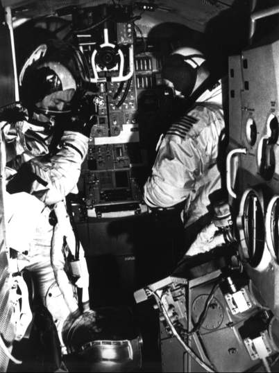
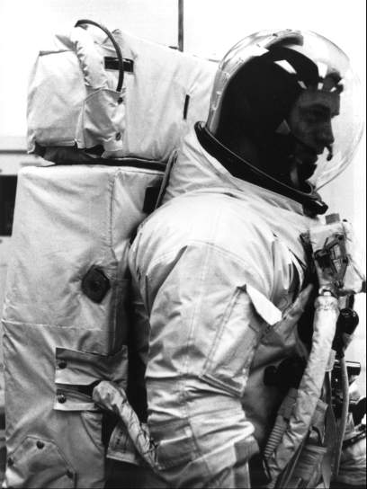

When James McDivitt, David Scott, and Russell Schweickart had received their Apollo flight assignment in late 1968, they were faced with an even more complicated mission than the one they contemplated in early 1969. Inspired by the Gemini VII and VI rendezvous mission in October 1965, when one spacecraft was launched to catch up with another that had been sent into space a dozen days earlier, some NASA officials wanted to use this concept to check out lunar module and command module docking operations in earth orbit. Most Apollo mission planners wanted to avoid the extra tasks required for launching each vehicle on separate Saturn IB boosters, and by 1969 the big Saturn V rocket was all set to boost both spacecraft into earth orbit in a single launch. Although McDivitt and his crew would not have to search for the lunar module in the vastness of space for the rendezvous, this was almost the only thing that made it an easier mission.

McDivitt and Schweickart (left to right) practice in the lunar module simulator for the Apollo 9 mission to evaluate the LM in earth-orbit operations and the Apollo suit in the space environment.
From the perspective of early 1969, the manned shakedown cruise of the lunar module, even in earth orbit, was a venturesome journey. The thought of mission commander McDivitt and lunar module pilot Schweickart's flying away from the command module in this machine, which could not return to earth through the atmospheric shield, was a little frightening. In an emergency, however, command module pilot Scott could steer his ship to a rendezvous with a stricken lunar module. NASA officials hoped this would not be necessary; they wanted a smoothly operating lunar module that could simulate many of the steps in the lunar orbit mission.15

Although all three crewmen would be exposed to the space environment, where their lives would depend on their suits, only Schweickart would don the backpack (right photo) that provided independent life-sustaining oxygen and controlled temperature. McDivitt and Scott would draw supplies through umbilical hoses attaching their suits to the spacecraft. Schweickart's backpack is the same model that moon-strolling astronauts would later use.
Flight planners had another key objective for Apollo 9: checking out what might almost be called the third spacecraft in the program (a combination of the extravehicular space suit and the portable life support system - the PLSS, or backpack). As a matter of fact, this was the only flight scheduled for the backpack before the lunar landing mission, making it of prime importance in finding out how the equipment worked in the space environment. The commander and the lunar module pilot, wearing their extravehicular garments, would crawl through the tunnel from the command module into the lunar module. Then Schweickart, after donning the backpack and attaching a nylon-cord tether to his suit, would move through the open front hatch and step out on the porch. Finally, he would use handrails to climb over and crawl into the open command module hatch. Schweickart's tasks also included collecting experiment samples on the spacecraft exterior and standing in foot restraints (called "golden slippers") on the lunar module porch to take photographs and operate a television camera.16
This was a well-seasoned crew. McDivitt, a member of the second group of astronauts, chosen by NASA in September 1962, had been commander of Gemini IV, a trailblazer in its own right. It had included what was then considered long-duration flight, a rendezvous experiment, and a highly successful extravehicular exercise. Scott and Schweickart were members of the trainee group picked in October 1963, and Scott had been a crewman on Gemini VIII when it made the first docking in space. Although Schweickart had not flown a mission, he had participated heavily in the experiments program and in spacesuit testing. For two years the three men had been working as a team. By the time McDivitt's crew was finally ready for flight, it had spent 7 hours in training for each of the 241 hours it would spend in space. At a news conference, McDivitt quipped that he hoped all this training did not imply that the crewmen were slow learners.17
Because there would be two craft in simultaneous flight, Apollo 9 revived a practice that had been discarded almost four years earlier - call signs, or names, for spacecraft. Gordon Cooper had encountered trouble selling the name Faith 7 for his Mercury-Atlas 9 craft to NASA officials. If anything happened, they dreaded the thought of the almost inevitable headline: "The United States lost Faith today." During Gemini, these same leaders had turned down Gus Grissom's selection of "Molly Brown" for Gemini-Titan 3, which alluded to both the unsinkable characteristics of an American heroine and the loss of his Liberty Bell 7 during Mercury. His second choice, "Titanic," was equally unwelcome. After that, missions were simply called by the program name and a number: Gemini IV, Apollo 7. But a single designation, such as "Apollo 9," was no longer enough. Flight control would have to talk to McDivitt and Schweickart in the lunar module, as well as Scott in the command module. McDivitt's crew named the lander "Spider," for its long thin legs and buglike body. When North American shipped the command module to Florida, its candy-wrapped appearance and shape suggested the tag, "Gumdrop."18
15. Phillips to Actg. Admin., NASA, "Apollo 9 Mission (AS-504)," [18 Feb. 1969], with enc.; Phillips TWX to MSC, MSFC, and KSC, Attn.: Low, Lee B. James, and Middleton, "D Mission Objectives," 18 Feb. 1969.
16. NASA, "Project: Apollo 9," press kit, news release 69-29, 14 Feb. 1969, p. 20; J. V. Rivers and S. H. Gardner, "Apollo 9; Apollo AS504/104/LM-3: Final Flight Plan," 3 Feb. 1969 pp. 1-7, 1-8.
17. Barton C. Hacker and James M. Grimwood, On the Shoulders of Titans: A History of Project Gemini, NASA SP-4203 (Washington, 1977), append. II; Russell L. Schweickart interview, Houston, 1 May 1967; MSC, "Apollo 9 Prime Crew Briefing," 25 Jan. 1969; Apollo 9 press kit, p. 83.
18. Loyd S. Swenson, Jr., James M. Grimwood, and Charles C. Alexander, This New Ocean. A History of Project Mercury, NASA SP-4201 (Washington, 1966), p. 492; Hacker and Grimwood, On the Shoulders of Titans, pp. 403-04; Apollo 9 press kit, pp. 10-11.